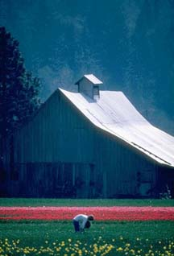

No doubt about it, Sofie Mae Strunk was the most desirable woman in Widow's
Peak, West Virginia. Not only did she raise the finest hogs in the state,
but she could slop them herself with a finesse not often seen so far back
in the hills. Many a man, hidden behind the brush arbor near her cabin and
gazing admiringly at her while she toted two over-flowing buckets of table
scraps up the hill to her hogpen, was known to lose his heart at the sight
of her sweat-bedewed mammary glands peeking provocatively above the
tattered lace of her hand-me-down bodice that had formerly belonged to her
much smaller sister Sadie, who had run away from home the previous April to
marry an itinerant Bible salesman who, in his sweet-talking city way, had
promised her the kind of salvation that an innocent back-woods girl found
irresistibly tempting. Sofie Mae herself was immune to this type of
temptation, else she might have been the one to run off to the flatlands
never to be heard from again. Indeed, many a lusty mountain man, attempting
to catch Sofie Mae's eye if not her heart, had instead caught her fist or
perhaps her knee applied to a part of his anatomy guaranteed to get his
attention and direct it in a direction that no longer included her.
Occasionally, some of these men were never heard from again. While most
people on the mountain figured the men's wounded masculine pride would no
longer allow them to live among their neighbors, a few old folks speculated
that something mighty peculiar was going on up on Widow's Peak.